| 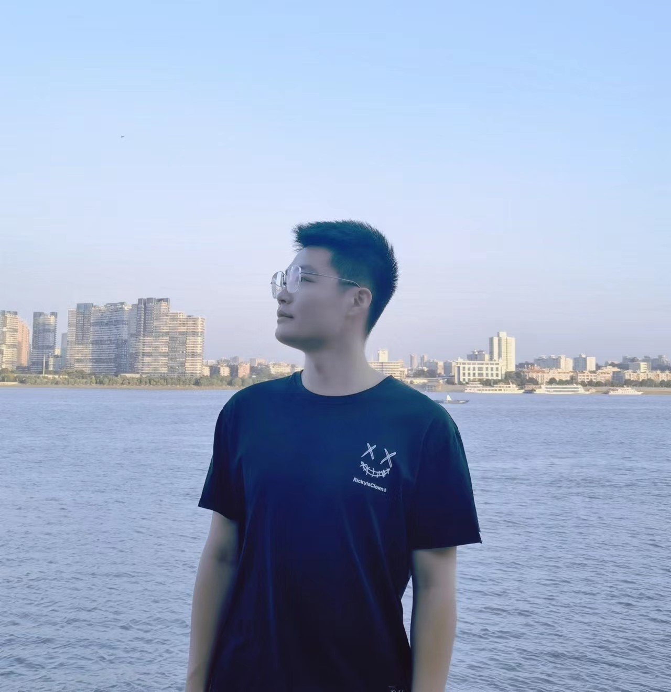 | Yi Xiao (肖屹) |
Yi Xiao is currently a Ph.D. candidate at Wuhan University, School of Geodesy and Geomatics. And now, he is visiting Western University supervised by Shuo Li and Boyu Wang. He received his bachelor in Hefei University of Technology. Drawing upon the realms of biomedical informatics, computer vision, and deep learning, his research focuses on developing novel methodologies to learn more efficient extraction of knowledge in medical information for computer-aided diagnosis, surgery and medical imaging. In addition to 2 Chinese patents pending, Yuting He has published 22 peer-reviewed journal/conference articles, including MedIA, TIP, J-BHI, IJCAI, MICCAI, ECCV and IPMI. Yuting also plays an active role in the leading societies of the computer vision and medical imaging field. Yuting He was the main organizer of KiPA 2022 challenge; reviewer of J-BHI, MICCAI in 2020, 2021, 2022; ICCV in 2021; CVPR in 2022, AAAI in 2023.
| 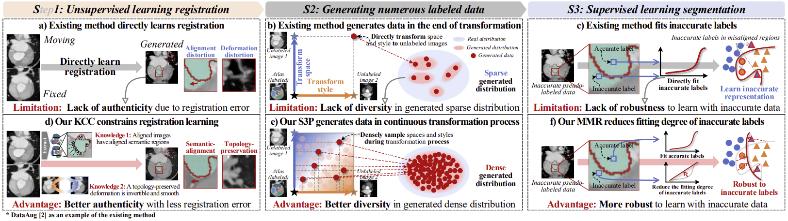 |
Learning Better Registration to Learn Better Few-Shot Medical Image Segmentation: Authenticity, Diversity, and Robustness. |
| 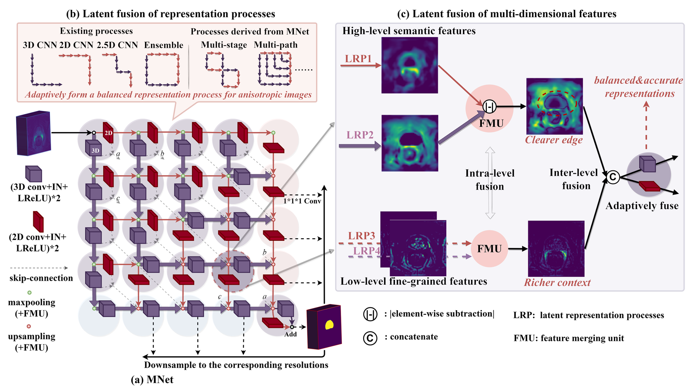 |
MNet: Rethinking 2D/3D Networks for Anisotropic Medical Image Segmentation. |
| 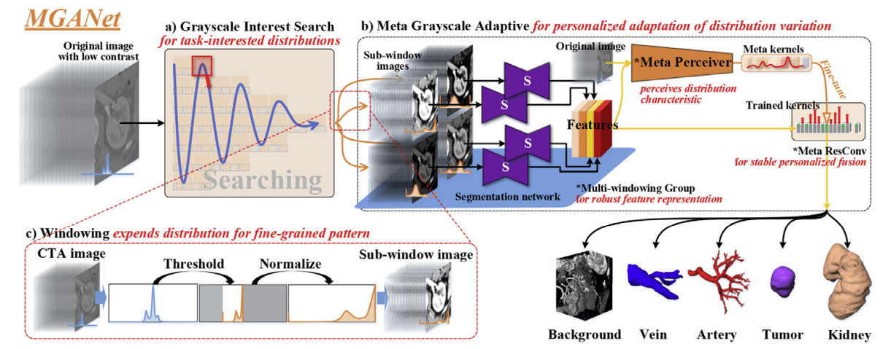 |
Meta grayscale adaptive network for 3D integrated renal structures segmentation. |
| 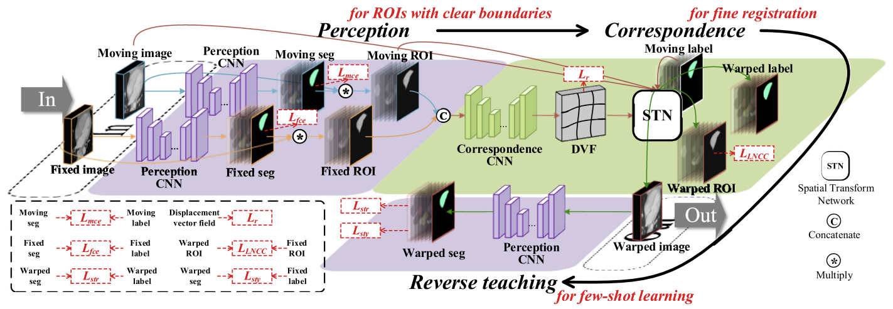 |
Few-shot Learning for Deformable Medical Image Registration with Perception-Correspondence Decoupling and Reverse Teaching. |
| 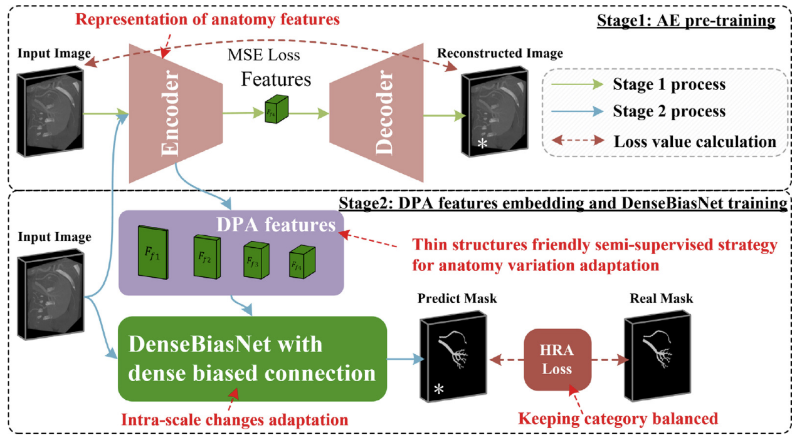 |
Dense biased networks with deep priori anatomy and hard region adaptation: Semi-supervised learning for fine renal artery segmentation. |
| 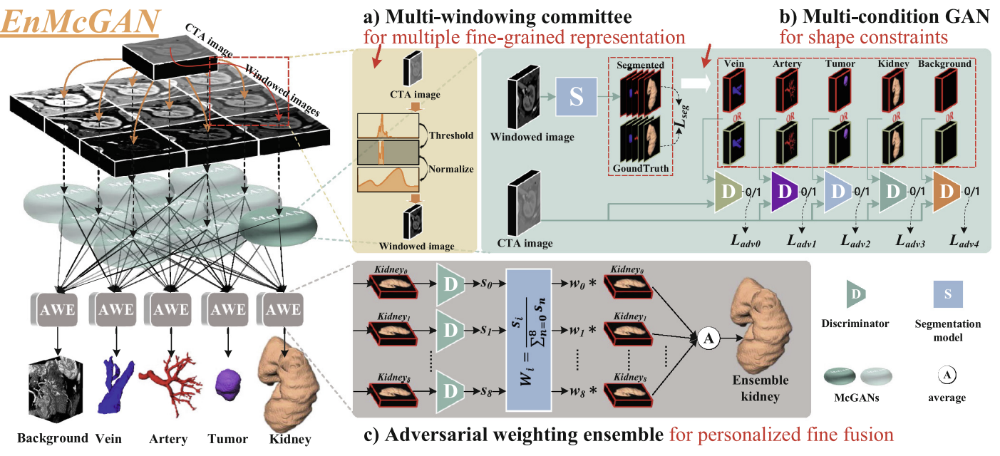 |
EnMcGAN: Adversarial Ensemble Learning for 3D Complete Renal Structures Segmentation. |
| 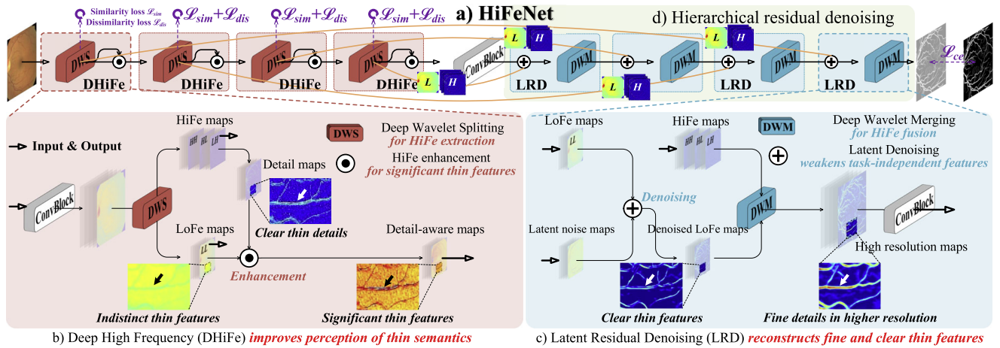 |
Thin Semantics Enhancement via High-Frequency Priori Rule for Thin Structures Segmentation. |
| 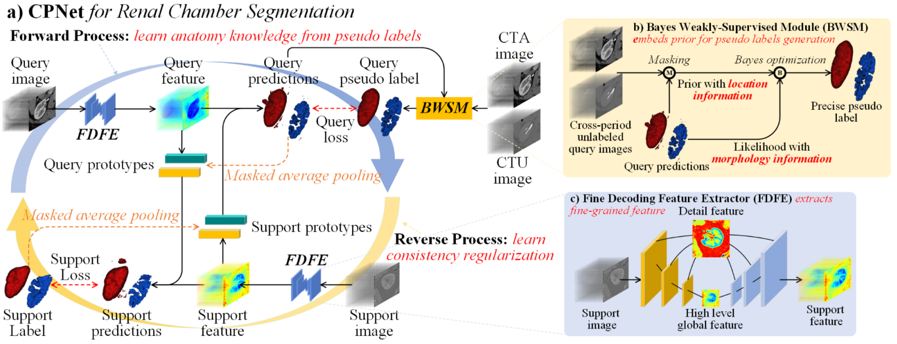 |
CPNet: Cycle Prototype Network for Weakly-supervised 3D Renal Chamber Segmentation. |
| 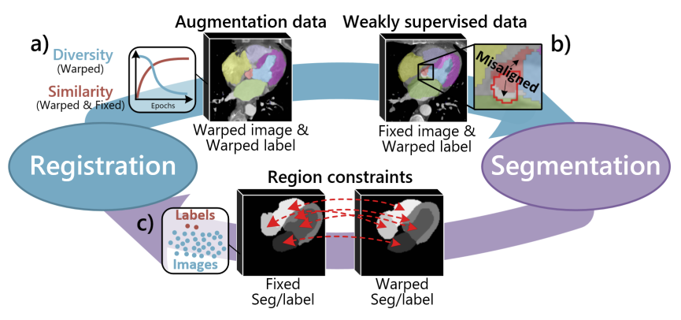 |
Deep complementary joint model for complex scene registration and few-shot segmentation on medical images. |
| 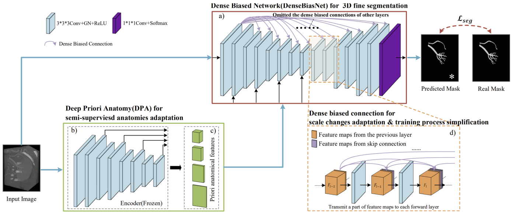 |
Dpa-densebiasnet: Semi-supervised 3d fine renal artery segmentation with dense biased network and deep priori anatomy. |
| 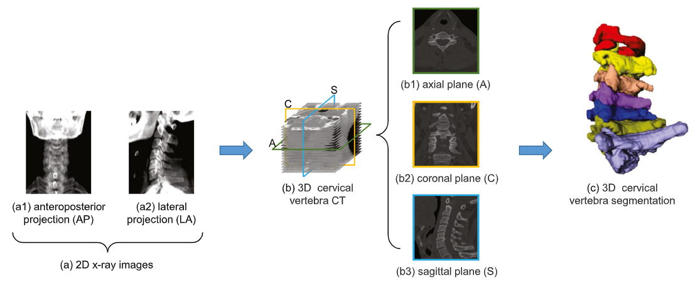 | X-CTRSNet: 3D cervical vertebra CT reconstruction and segmentation directly from 2D X-ray images. |
| 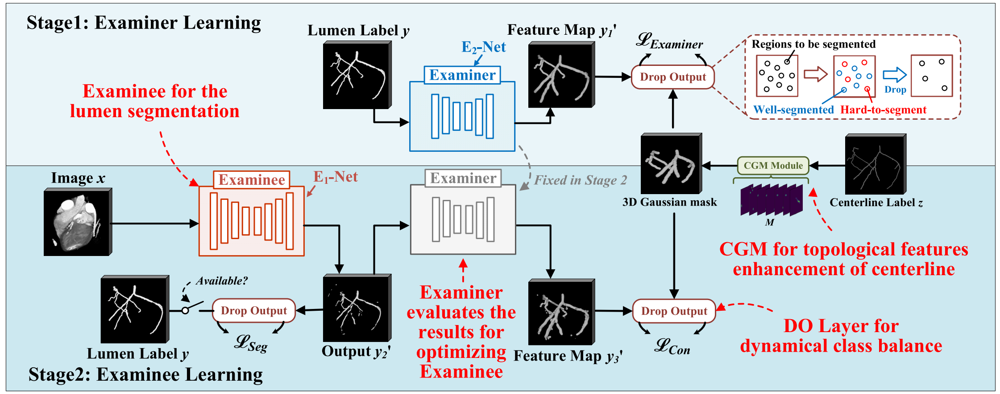 |
Examinee-Examiner Network: Weakly Supervised Accurate Coronary Lumen Segmentation Using Centerline Constraint. |
| 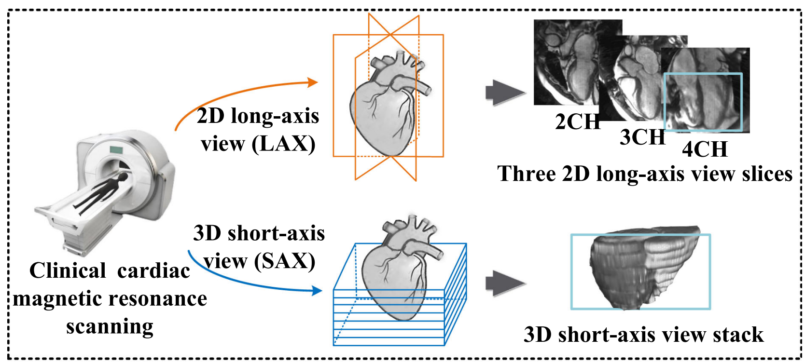 | MVSGAN: Spatial-Aware Multi-View CMR Fusion for Accurate 3D Left Ventricular Myocardium Segmentation |
| 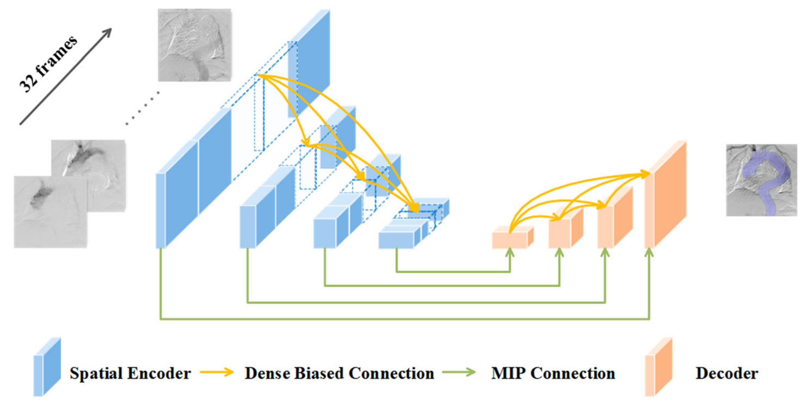 | Projection network with Spatio-temporal information: 2D+ time DSA to 2D aorta segmentation |
| 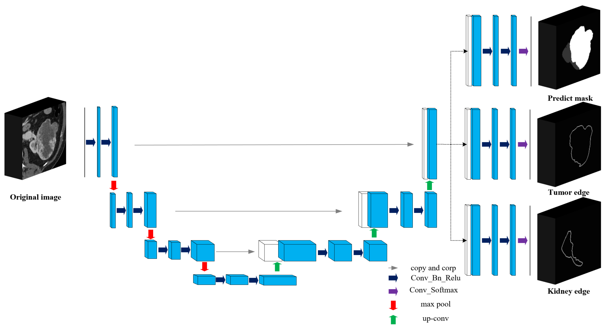 | BiSC-UNet: A fine segmentation framework for kidney and renal tumor |
Workshop/Challenge Organizers:
Co-organizer of MICCAI 2022 Challenge on Kidney PArsing Challenge 2022: Multi-Structure Segmentation for Renal Cancer Treatment.
Conference Reviewer:
Journal Reviewer: